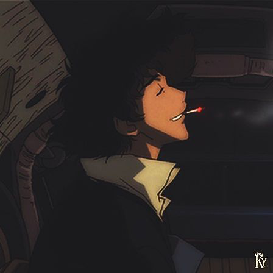
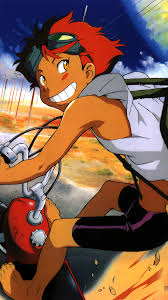
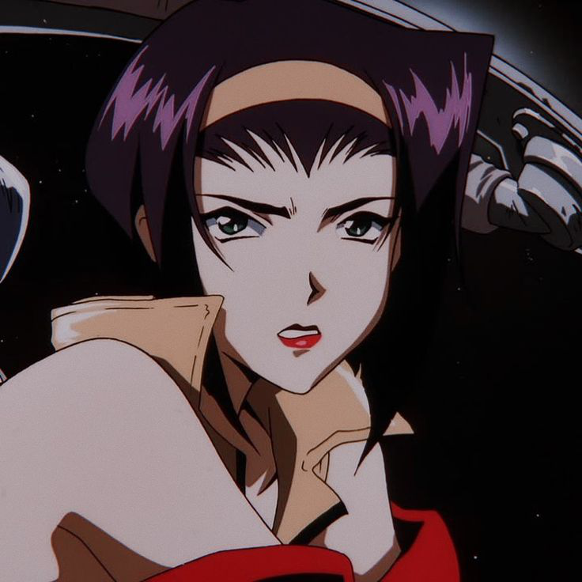
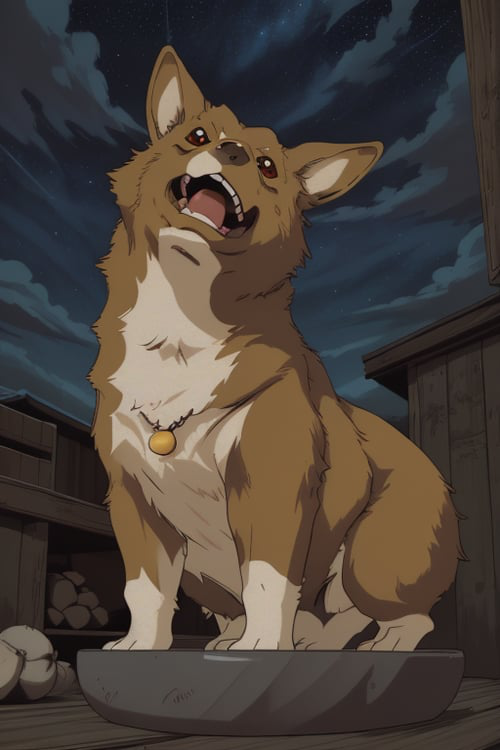
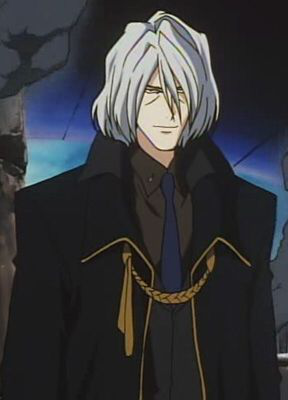

-
Spike Spiegel
Descrição
Sou um ex-membro do Sindicato do Dragão Vermelho e um caçador de recompensas que trabalha a bordo da nave Bebop. Spike é conhecido por sua habilidade excepcional em artes marciais, especialmente o Jeet Kune Do, e seu estilo de luta relaxado. Ele tem uma personalidade despreocupada e sarcástica, mas seu passado trágico e a perda de sua amada Julia o assombram constantemente.
-
Edward
Descrição
Sou uma hacker prodígio que se junta à equipe da Bebop. Ed é excêntrica, com um comportamento infantil e energético. Ela é capaz de invadir quase qualquer sistema de computador, tornando-se um recurso inestimável para a equipe. Apesar de sua aparência desleixada, Ed tem uma mente brilhante e um coração puro. .
-
Jet Black

Descrição
Sou o capitão da Bebop e um ex-policial da ISSP (Inter Solar System Police). Ele saiu da força policial após um incidente que o deixou com um braço cibernético. Jet é o membro mais maduro e responsável da equipe, muitas vezes assumindo um papel paternal para os outros. Ele é um excelente mecânico e piloto, além de ser muito habilidoso em combate corpo a corpo. .
-
Faye Valentiner
Descrição
Sou uma caçadora de recompensas com um passado misterioso. Ela foi criogenicamente congelada após um acidente e acordou décadas depois sem memórias de sua vida anterior. Faye é astuta, manipuladora e muitas vezes egoísta, mas também é vulnerável e busca desesperadamente entender seu passado. Seu charme e habilidades em combate a tornam uma integrante valiosa da Bebop. .
-
Ein
Descrição
Sou um cão da raça corgi galês de Pembroke, que é geneticamente modificado e extremamente inteligente. Ele é um "cão de dados" e pode realizar tarefas complexas e resolver problemas que a maioria dos cães comuns não poderia. Ein é um companheiro leal para a equipe e desenvolve um vínculo especial com Ed. .
-
Vicious
Descrição
Sou um ex-colega de Spike no Sindicato do Dragão Vermelho e representa a parte sombria do passado de Spike. Vicious é frio, calculista e implacável, sempre buscando poder e controle. Seu desejo de eliminar Spike e assumir o controle do Sindicato o coloca em rota de colisão direta com o protagonista..